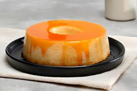

Pudim Tradicional
Ingredientes
- 1 lata de leite condensado
- A mesma medida de leite (lata)
- 3 ovos
Calda
- 1 xícara de açúcar
- 1/2 xícara de água
Modo de Preparo da Calda
- Em uma panela, derreta o açúcar em fogo médio até formar um caramelo dourado.
- Adicione a água com cuidado e misture até dissolver tudo.
- Despeje a calda na forma de pudim e espalhe bem.
Modo de Preparo do Pudim
- No liquidificador, bata o leite condensado, o leite e os ovos até ficar homogêneo.
- Despeje a mistura na forma caramelizada.
- Cubra com papel alumínio.
- Leve ao forno médio (180°C) em banho-maria por cerca de 1 hora e 15 minutos.
- Espete um palito — se sair limpo, está pronto.
- Deixe esfriar e leve à geladeira por no mínimo 4 horas.
- Desenforme com cuidado.